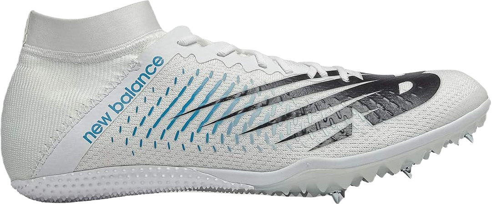
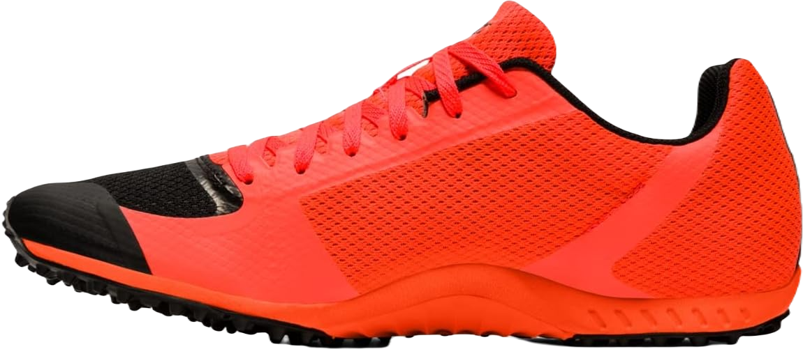
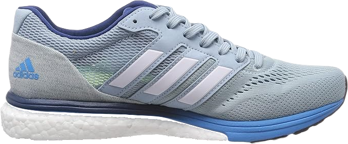
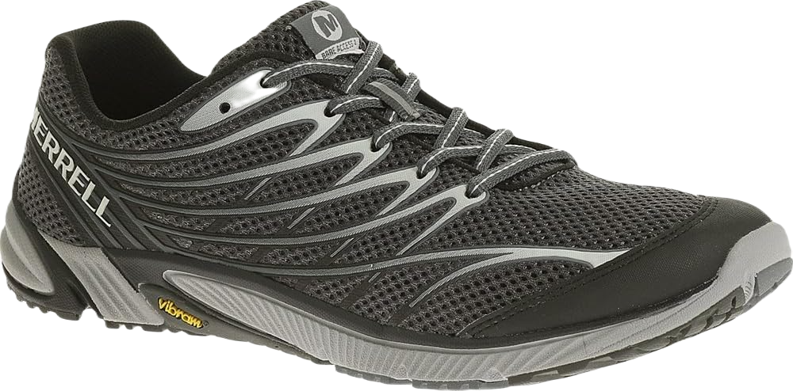

5 Best Shoes For Sprint Training Reviewed In 2024
Finding the best shoes for sprint training that enhance your running experience can be challenging, often requiring you to compromise on durability since running shoes tend to be less durable than walking shoes. To discover the ideal pair for your sprint training, you'll need to consider various features.
The perfect shoe offers a balance of durability and comfort. If you're looking for a high-quality sprinting shoe that lasts, check out our curated list.
-
#1
New Balance Men’s 100v3
New Balance is a well-known and reputable brand that offers a wide range of shoes suitable for various fields. Their products are trusted by many, thanks to the variety of shoe types they produce, each designed with unique features. Not only do they prioritize quality, but they also emphasize stylish designs. The New Balance Men’s 100v3 Track and Field Shoe stands out with the same level of potential as any other shoe in their lineup.
One of the standout features of this shoe is its exceptional ability to enhance your sprinting experience. It comes equipped with six spikes that provide outstanding traction, making it ideal for fast sprinting. These spikes are specifically designed to help you change direction quickly and stop abruptly, giving you an edge in your running performance.
Additionally, the shoe includes a rubber outsole, which further enhances its traction capabilities. This combination of features makes the New Balance Men’s 100v3 a top choice for athletes looking for reliable footwear. -
#2
ASICS Unisex Hyper XC 2
ASICS is a fantastic brand that truly values your investment. If you’re looking for durability, style, and premium quality features, ASICS is definitely worth considering. The ASICS Unisex Hyper XC 2 Track & Field Shoes are designed for both men and women, allowing everyone to enjoy their exceptional performance without being categorized by gender.
Once you try these shoes, you’ll immediately notice the quality. They come equipped with top-notch spikes that provide excellent traction, giving you complete control while running. You won’t have to worry about slipping, thanks to the high-quality design that is even recommended for athletes.
Featuring 9mm pyramid spikes, these shoes are engineered to perform on surfaces like dirt and grass. Weighing in at just 6.1 ounces, they are remarkably lightweight, making them perfect for sprinting. Train as hard as you want; your feet will remain comfortable and energized throughout your workouts. -
#3
Adidas Men’s Nova Run Track Shoe

This shoe is packed with features designed to ensure your feet stay comfortable throughout your run. For professional runners and athletes, the Adidas Men’s Nova Run Track Shoe – Sprint Shoes without Spikes is likely to become a top choice. Adidas has long been recognized as a reliable brand that prioritizes comfort and durability.
Constructed from imported materials, this shoe boasts a high-quality rubber outsole that provides excellent traction and a rugged pattern to help prevent slips and trips. Its synthetic upper enhances flexibility, making it ideal for sprinting, while the stretchy material adds to the shoe's overall elasticity and comfort.
The low-top arch design helps maintain balance, particularly on challenging terrains. Additionally, this footwear promotes airflow, keeping your feet cool and dry even on hot days. The breathable mesh not only enhances ventilation but also helps eliminate bacteria and moisture, reducing the risk of fungal infections. -
#4
Adidas Men’s Adizero Boston 7
Next, we present the Adizero Boston shoe by Adidas, designed with a textile and synthetic construction that ensures maximum comfort, especially during fast-paced runs. Its springy outsole provides effortless footfalls, making each stride feel lighter. With imported materials from the USA, you can trust its durability and industrial-grade design.
For sprinting, having a comfortable and cozy shoe is essential to maintain ultimate foot solace. If you're looking to enhance your efficiency, the Adidas Men’s Adizero Boston 7 Running Shoe is an excellent choice that combines quality and design to elevate your running experience.
When it comes to aesthetics, this shoe is quite appealing. Its trendy outer design is not only stylish but also eye-catching. Additionally, the model is available in four different color options, allowing you to select a design that suits your taste. The available colors include Black/White/Carbon, White/Carbon/Shock Red, Legend Ink/Shock Lime/Hi-Res Band, and Carbon/Black/Hi-Res Blue. -
#5
Merrell Men’s Bare Access 4
For Merrell Shoe Company, combining style and comfort in footwear is a straightforward task. The high-quality materials and durable construction ensure better strides. This shoe is crafted with mesh and TPU uppers, enhancing flexibility and durability, giving you the freedom to run like a pro.
Additionally, its imported quality and sturdy build contribute to long-lasting wear. The Vibram sole instills confidence for a comfortable run, while the EVA (Ethylene-Vinyl Acetate) footbed adds to the shoe’s lightweight and resilient qualities.
As you run, the bouncy cushioning provides a soft and springy feel underfoot, which is essential for comfort. The lace-up design allows for a snug fit, making it ideal for running. This lightweight footwear minimizes the strain on your joints, ensuring a pleasant running experience.